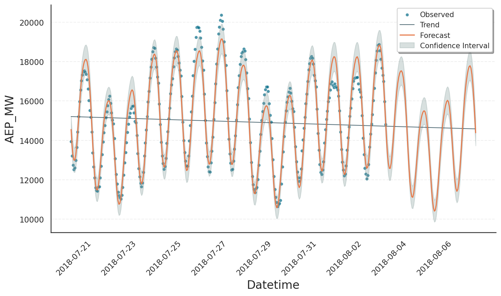

Predictions#
In the previous tutorials, we frequently used the model → fit → predict workflow. The output of predict() was usually passed directly into the plot() method without inspecting it further. In this tutorial, we will take a closer look at the predictions themselves, focusing on a key feature that sets Gloria apart from Prophet: the distinction between confidence intervals around the predicted expectation and intervals describing the variability of observed data.
Output Data Frame#
Let’s start with a simple example from the Basic Usage tutorial:
import pandas as pd # For loading and processing
from gloria import Gloria
# Load the data
url = "https://raw.githubusercontent.com/e-dyn/gloria/main/scripts/data/real/AEP_hourly.csv"
data = pd.read_csv(url)
# Save the column names for later usage
timestamp_name = "Datetime"
metric_name = "AEP_MW"
# Convert to datetime
data[timestamp_name] = pd.to_datetime(data[timestamp_name])
# Restrict data to last 14 days
data = data.sort_values(by = "Datetime").tail(336)
# Set up the model
m = Gloria(
model = "gamma",
metric_name = metric_name,
timestamp_name = timestamp_name,
sampling_period = "1 h",
n_changepoints = 0
)
# Add observed seasonalities
m.add_seasonality(name="daily", period="24 h", fourier_order=2)
m.add_seasonality(name="weekly", period="7 d", fourier_order=2)
# Fit the model to the data
m.fit(data)
# Predict
prediction = m.predict(periods=96)
# Plot
m.plot(prediction, include_legend=True)
With the plot shown here:
{kind=link}
The plot elements forecast, trend, and confidence intervals are all stored in the prediction data frame. This object is returned by predict() and consumed by plot(). We can explore its contents by printing the column names:
for col in prediction.columns:
print(col)
Datetime: Timestamps at which the prediction was evaluated.yhat: The overall prediction, shown as orange solid line.yhat_upper/yhat_lower: Upper and lower bounds on the prediction at a confidence level defined bym.interval_width(default 80%). These bounds are not shown in the plot.observed_lower/observed_upper: Bounds on the variability of the observed data, derived from the underlying distribution model at a quantile level specified bym.interval_width. These bounds are displayed by the grey area.trend: Trend component of the model, shown as black solid line.trend_upper/trend_lower: Bounds corresponding to the trend contribution withinobserved_lower/observed_upper.*_linked_*: The respective quantities on the scale of the underlying generalized linear model, transformed by the link-function. See Decomposition Types tutorial for details.
Some of these columns need further explanation, which is given in the following.
Confidence Bands vs Data Variability#
By default, Gloria’s fit() method yields a point estimate of all model parameters by performing a maximum a posteriori estimation. As a consequence, the prediction yhat is also just a point estimate and does not by itself include uncertainty. To add a confidence band around yhat you can use Laplace sampling. This method draws samples from a normal approximation centered at the optimized mode. To trigger Laplace sampling, set the use_laplace=True flag while calling fit(). When running the fit, Gloria’s logger will inform you about the steps being taken:
09:49:57 - gloria - INFO - Starting optimization.
09:49:57 - gloria - INFO - Starting Laplace sampling.
09:49:58 - gloria - INFO - Evaluate model at all samples for yhat upper and lower bounds.
Here, Gloria first runs the optimization, then applies Laplace sampling, and finally calculates the upper and lower bounds for yhat, saved in the yhat_upper and yhat_lower columns of the prediction output. These columns also exist when use_laplace=False is set. In that case, yhat, yhat_upper, and yhat_lower are identical.
Note
The quality of Laplace sampling depends on how well the normal approximation agrees with the true a posteriori distribution.
In contrast, data variability is always computed, as it only requires the point estimate from the optimization step. Specifically, the optimized fit parameters are passed to the model’s percent point function (see [1]) along with the upper and lower confidence levels corresponding to the requested interval width. The results are stored in the observed_upper and observed_lower columns. Typically, the variability interval is much wider than the confidence band of yhat, which is illustrated in the following plot of the first 100 data points: [2]

Important
Keep in mind: in Prophet yhat_upper and yhat_lower represent data variability and therefore correspond to Gloria’s observed_upper and observed_lower.
Trend Predictions#
While Gloria assumes stationary seasonality and event patterns, the trend component is less predictable. Neither the location nor the size of changepoint rate changes can be known in advance. What we can specify, however, are changepoint density and mean rate change, as they have been learned during training. Gloria uses these parameters to predict the trend and its uncertainty in the same fashion as Prophet. The following figure shows the outcome of our example, when n_changepoints=8 is set:

From the result we observe the following:
From the 8 changepoints in total, only 3 result in meaningful rate changes, due to the sparse prior on rate changes.
It is not possible to assume specific changepoints or rate changes in the forecast period. Therefore, the trend forecast is simply an extrapolation of the latest trend in the training period.
The variability intervals widen as the forecast extends further beyond the training data. This is the result of an additional trend uncertainty estimation step, which simulates possible future trends based on the known changepoint density and mean rate change. Their distribution contributes to the overall variability. The number of these simulations can be controlled by the Gloria input parameter
trend_samples(1000 by default).
Footnotes